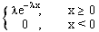

Verovatnoca i statistika
jun '94.
.
1. Homogena kocka cije su strane numerisane brojevima 1, 2, 3, 4, 5, 6 baca se cetiri puta. Izracunati verovatnocu dogadjaja da je zbir brojeva dobijenih u prva dva bacanja manji od zbira brojeva dobijenih u poslednja dva bacanja.
2. Slucajna velicina X ima gustinu raspodele:
j(x) = 
Odrediti gustinu raspodele slucajne velicine Y = X³ i izracunati njeno
matematicko ocekivanje.
3. Dat je niz nezavisnih slucajnih velicina Xn
Î [0,
1], n = 1, 2, 3, ... Neka je Yn = 1 / (nª Xn),
gde je a > 0. Ispitati skoro sigurnu i srednjekvadratnu konvergenciju
niza slucajnih velicina (Xn).
[0,
1], n = 1, 2, 3, ... Neka je Yn = 1 / (nª Xn),
gde je a > 0. Ispitati skoro sigurnu i srednjekvadratnu konvergenciju
niza slucajnih velicina (Xn).
4. Obelezje X ima gustinu raspodele j(x)
=
Na osnovu uzorka (X1, X2, ...,
Xn) odrediti ocenu maksimalne verodostojnosti nepoznatog
parametra l i ispitati postojanost dobijene
ocene.
5. Od 100 nezavisnih eksperimenata uspesno su zavrsena 82 eksperimenta. Odrediti 95%-ni interval poverenja za nepoznatu verovatnocu uspeha u jednom eksperimentu.
6. Hipoteza H0 (p £ 1/100), gde je p verovatnoca proizvodnje neispravnog televizora, odbacuje se u korist alternative H1 (p > 1/100), ako se u uzorku od 20 televizora pronadju bar dva neispravna. Odrediti funkciju moci testa (tj. verovatnocu da ce nulta hipoteza biti odbacena kao funkcija argumenta p) i skicirati grafik te funkcije.